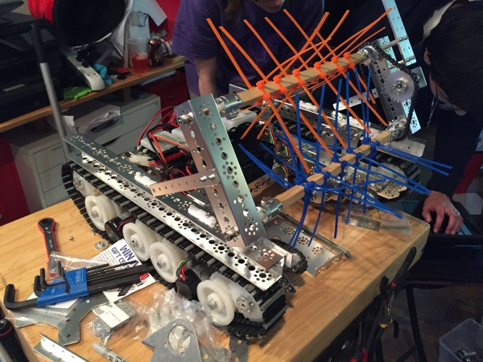

Since the robot's last run, several fixes and adjustments had to be made in order to make the robot operational again. All we had to do was tighten a couple of bolts, so it wasn't that big of a deal. We'll probably have to do a quick check from now on to make sure nothing's falling off. Afterward, we set to using the same beater bar we used last year (the first version, at least) on our new robot to sweep up blocks/balls.  The small plates on the front of each of the sides are meant to guide the beater bar's sliding off the robot when being deployed.
Next, we added sliding platforms on which the beater bar is attached so that we can deploy them. [INSERT PICTURE HERE] The mechanism slides back and forth, with the beater bar sliding off the chassis and dropping down to the appropriate height. No motors to run it have been connected yet.
This beater bar is the first step on our way to adding everything necessary to the robot's chassis to allow it to compete. It was somewhat difficult getting all the bolts to line up since we're using some parts from a different building system. With a scrimmage next week on Saturday, hopefully we can slap some motors on it to get it moving by then.